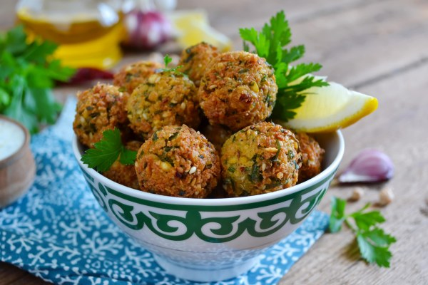
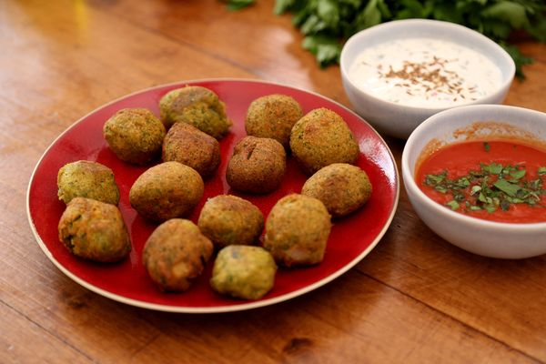

Recette de falafel (croquettes de pois chiches)
Ingrédients
- 200 g de pois chiches
- 500 g de fève sèches
- 1 oignon moyen
- 2 gousses d'ail
- 1 bouquet de persil
- 3 cuillères à soupe de farine
- 1 cuillère à café de cumin en poudre
- 1 cuillère à café de coriandre en poudre
- 1 cuillère à café de paprika
- 3 cuillères à soupe de basilic frais haché
- Sel
- Huile de friture

Instructions
- Faites tremper les pois chiches et les fèves dans l'eau 12 h, les égoutter et les cuire 45 mn à l'auto cuiseur.
- Peler oignon et ail, les hacher ainsi que le persil.
- Passer les fèves et les pois chiches au mixer (ou robot).
- Mélanger avec le persil, l'oignon, l'ail, la farine, les épices, le sel.
- Pétrissez le tout avec vos mains en ajoutant un peu d'eau si nécessaire. Rassemblez la pâte et laisser reposer au réfrigérateur pendant minimum 30 mn.
- Façonner une trentaine de boulettes de la grosseur d'une pièce de 2 euros.
- Les faire frire 2/3 mn puis les égoutter sur du papier absorbant.
- ervir chaud ou froid avec des petites sauces tomates aux herbes, ou sauces yaourts.
